两次全球大危机的比较研究
刘鹤
国内市场的货币供应：国内资本流通价值+国内资本储蓄价值
对1929和2009两次危机的多角度思考
基本方法：
- 资本注意内生矛盾积累到无法调节的程度后的集中爆发
- 通过历史比较来理解过去，推测未来的可能变化
- 社会科学没有研究的实验室
- 基本逻辑是历史周期律；周期性是历史变化和自然界的本质特征
- 特定背景下，政府行为和大众心理的特征。关注“是什么”
- 两次危机的不同点：
- 29年的短期性强。09年的长期性强
- 29人口：年轻、教育程度低、变革性强。09：发达国家老龄化、教育程度高
- 29：第二次技术革命。09：第三次技术革命，有核平衡，传播范围更大。
- 29：从中心到外围的单向扩散。09：双向扩散
- 两次危机的共同点：
- 重大技术革命引发过度繁荣，进而演变为萧条
- 周期在缩短：1870-1929：60年。1980-2009：30年。
- 繁荣带来的不平衡：产业失衡、收入分配差距扩大、投机性增强。
- 收入分配差距扩大是危机的前兆？
- 民粹主义政策通常是危机的推手
- 一夜致富：极端的投机心理状态
- 人们不是找理由使自己保持理性，而是找理由让自己盲目冒险
- 危机爆发后面临：民粹主义、民族主义、经济问题政治意识形态化
- 两次危机中的市场力量从来都是高度政治化的力量
- 大危机一旦发生就注定是一个较长的过程。
- 危机只有发展到最困难的阶段才有可能倒逼出解决方案。
- 危机具有强烈的在分配效应（国内、国际）
- 全球进入总需求不足和去杠杆化的漫长过程
- 集中力量办好自己的事
经济金融角度
- 虽然缓慢但难以改变技术长周期末端产业利润率下降的趋势
- 银行危机（货币危机）是大萧条的真正开始
- 举债刺激需求是在维持虚假繁荣，只是推迟了危机的发生
- 化解危机的根本办法是：技术变革（增加技术研发投入）、产业转型（减少企业竞争）、政策调整（低福利）
- 竞选政治的短视为危机的发展推波助澜
- 对商品、市场、资源的争夺将成为主导国际关系的首要因素
- 国民文化素质：持之以恒、敬业勤勉、不骄不躁、积极进取的氛围
- 29：全球贸易/GDP=16% ，资本流动/GDP=8%；09：49.5%，27.3%
- 当前的牙买加体系；储备货币多元化但以美元为主
- 过剩危机：物价下跌；
- 金融市场和国际贸易是危机传导的两个渠道
- 从工业上看，09< 29,从工业产出、股票市值、贸易降幅上看，09 >29
- 宽松货币政策引发泡沫是两次危机爆发的相同原因
- 顺周期or 逆周期
- “永恒繁荣不会超过5年？”
- 美国过度消费，对外竞争力下降和“双赤子”是09金融危机的根本原因
- 大萧条时期的主要财政政策；减税，扩大财政支出
- 危机中政府采用贸易保护和货币贬值的政策
- 经济决定金融：经济发展水平和质量决定了金融的发展水平和质量
- 国际货币体系的重建：根本上取决于政治经济军事实力的对比。因此是一个长期的过程
- 「金融监管有合规、资本为本转变为风险为本的管理」
- 金融危机就像是美女，很难明确定义，但遇到了就可以认出来
- 金融危机不是天灾是人祸
- 系统性风险监管：知难，行更难
- 房地产问题成为举足轻重的脆弱性来源
国际政治经济格局视角
- 一战使美国成为全球最大债权国
- 大萧条爆发于金本位崩溃后的15年
- 08年国际金融危机是美国消费主义危机，也是全球经济增长模式的危机。
- {提供反经济周期的长期贷款}
宏观视角
- 相同点：
- 以日用工业品为中心，物价出现持续下跌压力。
- 房地产市场、股票市场过热，同时出现信用的急速扩张
- 金融监管普遍缺失，自由放任主义盛行
- {危机期间资本配置：（银行）货币、（军工）股票、黄金各占1/3}
- 金融市场发生历史性结构性变化，由存贷款为中心，转变为证券化商品，衍生品交易为方向-美联储成为最后贷款人
- 银行危机原因：流动性不足冲击、债务偿还能力不足
- 背景：
- 新技术革命+经济全球化
- 体制改革滞后和宏观政策失误是两次大危机的基本成因
- 危机爆发使企业的经营目标由“利润最大化”变为负债最小化：资产负债表衰退
- 两次大危机都是由银行业系统性风险引爆金融危机并导致经济危机
- {大变革时代也是大变动时代}
- 繁荣时期要有危机意识，不能一再延误改革良机
教训：
- 危机时期，各国拼的不是一时的增长速度，而是结构调整速度，经济转型速度归根结的还是体制改革的速度
- 货币政策必须松紧适度，不能只顾追求短期繁荣
- {宽松的货币政策能够起到泡沫做大的作用，紧缩的货币政策能够抑制资本从地利润的实体经济中流出到股市楼市吗？如果可以的话，会不会出现通货紧缩？}
- 财政政策必须量入为出，留有足够的余地才能临危受命{手里必须有钱}
- {次贷危机-国际金融危机-主权债务危机-？}
- 金融安全网核心架构“三道防线”：金融监管者、最后贷款人、存款保险制度
- 社会安全网必须覆盖广泛，社会保障线不能水平过高
- 政府可以集中力量办大事导致国进民退倾向和政府债务高企
- 政府职能：资源配置、收入再分配、稳定经济{中国：经济调节、市场监督、社会管理、公共服务}
- 资源配置靠市场、
- 市场监管靠政府（明确监管内容和规则）、
- 收入再分配（财政靠政府，金融靠市场{政策金融除外}）
- 安全保障靠制度
- 稳定经济：政府干预经济只能应用于大萧条大危机的特殊时期
- 一般来讲，财政手段追求公平、金融手段追求效率、
- 政府与市场共存且互补
- 金融的发展是为了促进实体经济的发展{目的}
- 新自由主义：片面强调市场作用，完全否定政府作用
- 创新；新事物的大规模商业化应用{经济学名词：金融创新，科技创新}
- 经济发展注重效率，收入分配注重公平{公平特指结果公平}
- 市场竞争产生失败者。创造性毁灭。解决方案：社保
- 社会保障既不能缺失，也不能过度（保障过度产生过度消费-财政负担：欠的东西总要还的）
- 社会保障体系具有能上不能下的刚性特征
- 凯恩斯强调他的理论只用于分析短期经济现象
- 在激励人力资本投资和技术进步方面更有效的制度
- 正确处理韬光养晦和有所作为的关系：韬光养晦是为了有所作为
- 一个国家在赶超世界霸主时通常有三种策略啊：
- 韬光养晦策略：广交友，不当头。无论如何绝不当头，不当炮灰
- 有所作为策略：促协调，备军斗。
微观机制视角：
- 经济转型扮演者极为重要的作用{金融与实体经济关系中}
- 金融将资本配置到新的经济增长点上
- 金融市场：将资本富裕方与资本需求方连接起来
- 房地产泡沫于1926年首先破灭。1929股市崩盘；2001年股市it泡沫破裂，07年房地产次贷危机
- 原因分析：
- 信贷泡沫
- 房地产泡沫
- 非传统抵押贷款
- 信用评级和资产证券化
- 金融机构集中了高度相关的风险
- 杠杆率与流动性风险
- 传染的风险
- 共同的冲击金融冲击和恐慌
- 金融危机导致经济危机
- 服务业往往波动较大，抵御风险能力低
- 收入分配差距扩大可能是导致金融危机的一个重要根源
- 每次劳动力市场紧张都会导致经济衰退
- 微观层面上的企业绩效变化会产生宏观层面上的整个实体经济和金融体系的连锁反应（蝴蝶效应）
- 金融的本质是将储蓄变为投资{美国从政府到个人的低储蓄高投资解释？将别国的储蓄变为本国的投资}
- 金融机构的分业经营和混业经营的选择？
- 金融业集中度：寡头垄断
- 面临的问题：
- 经济增长模式转型缓慢缺乏新的经济增长支撑点
- 收入分配差距过大，劳资矛盾逐步显现
- 直接融资规模小，金融集中度偏高（大而不能倒问题同样出现在中国）
- 大萧条在政治上起到了放大民族冲突和意识形态差别的作用。{危机所到之处都掀起不同程度的动乱}
- 欧债危机的本质是欧元的危机，是欧盟政治体制的危机
- 本次危机不会动摇全球资本主义体系的根本理念和制度。
- 以美国过度消费为驱动力的经济增长模式不可持续
- 总需求决定总供给？
- 金融创新要实现降低和分散金融风险的目的。
- 手段：缩小收入差距，完善社保体系、制止极端思想传播
- end
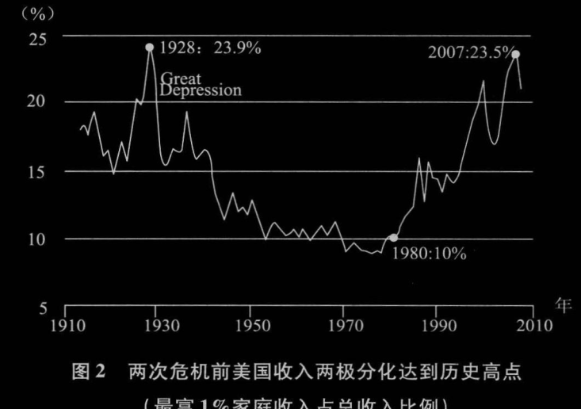
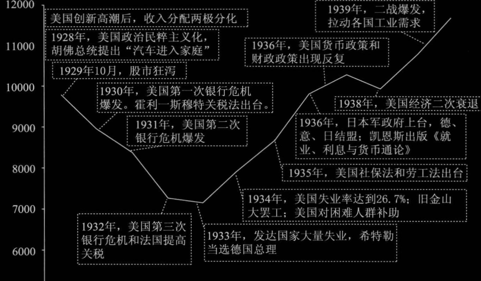
 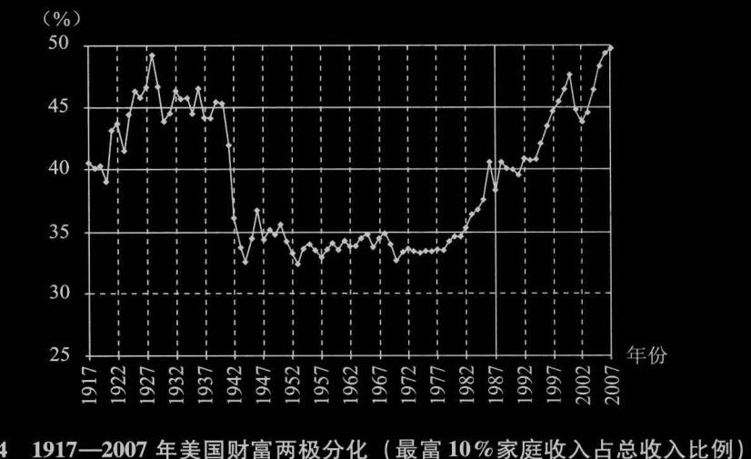
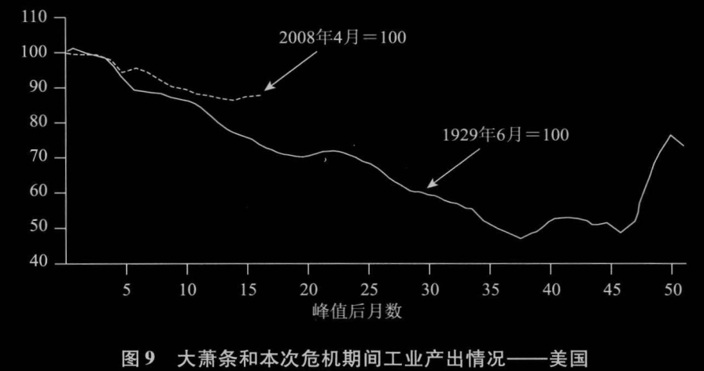
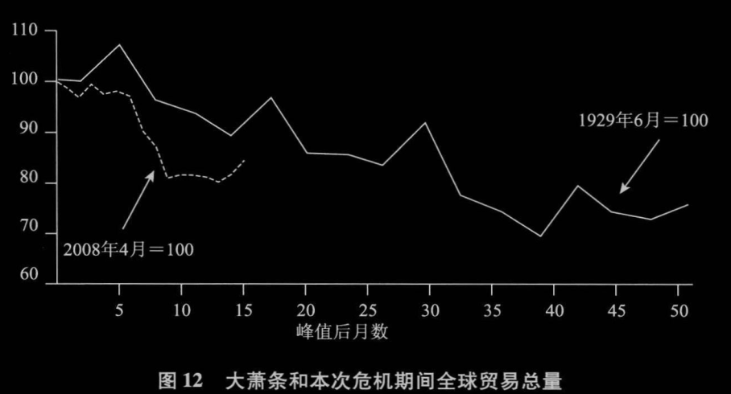
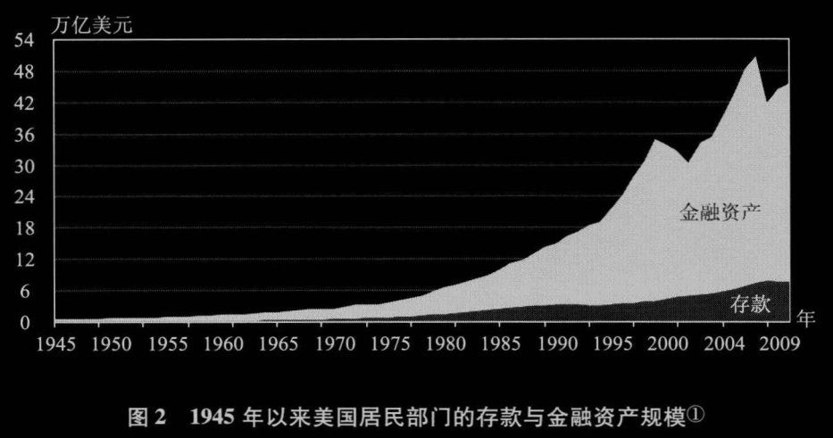
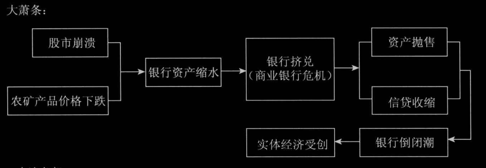
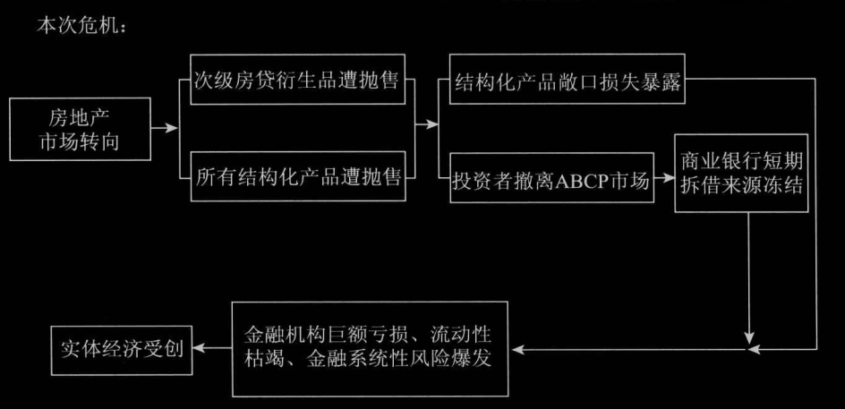
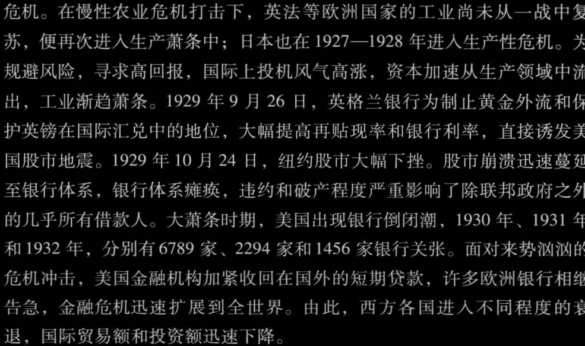
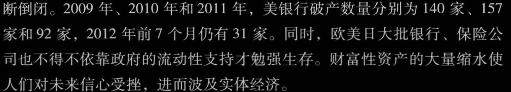
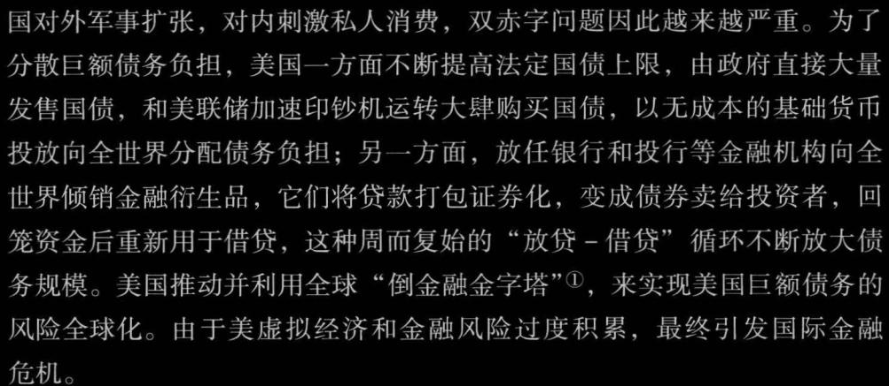
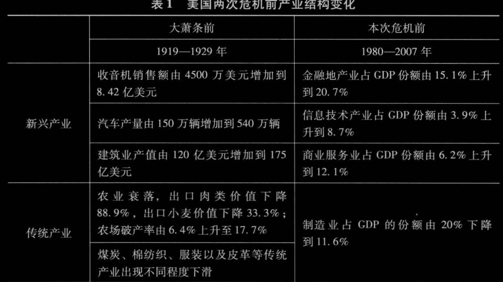
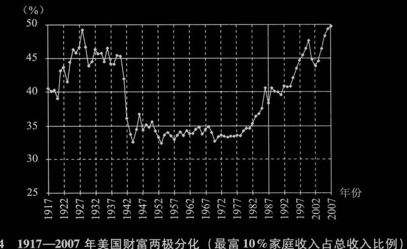
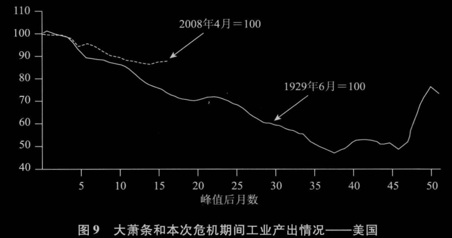
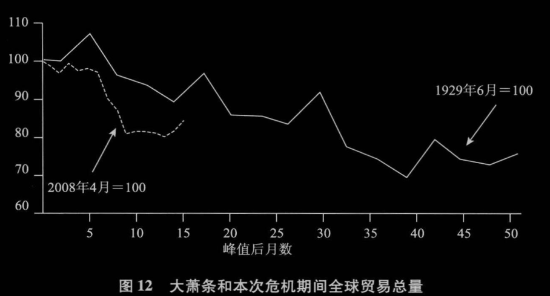
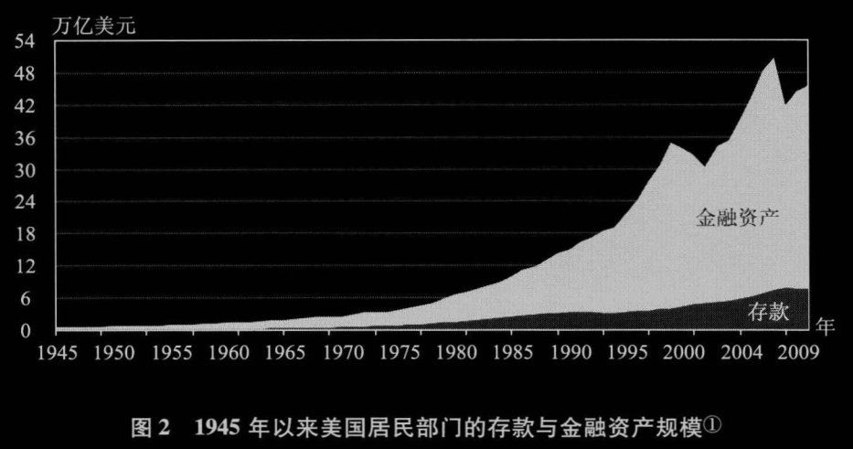
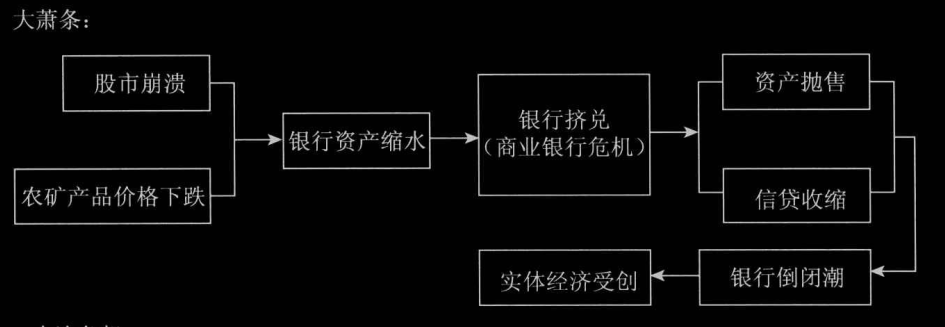
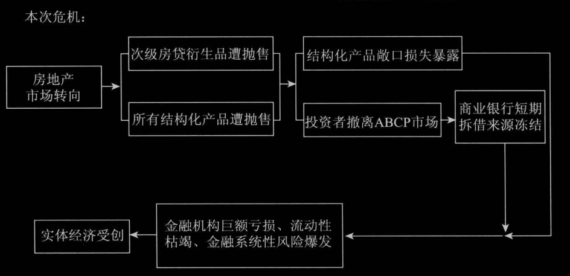
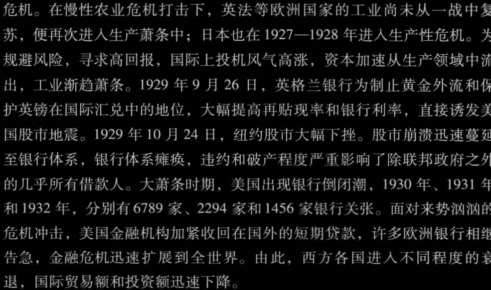
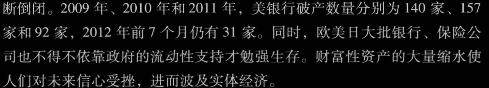
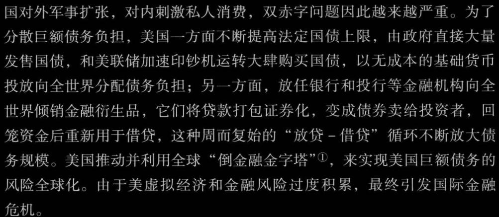
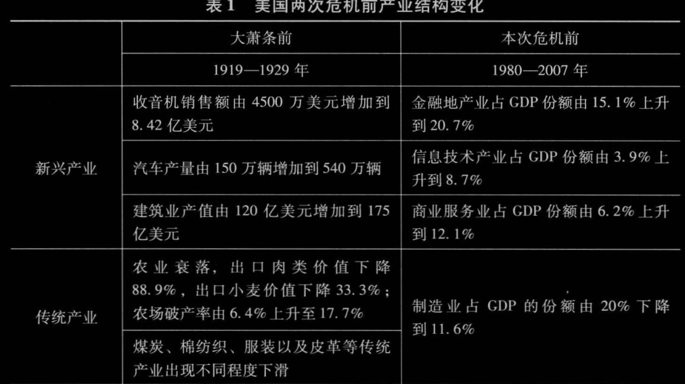